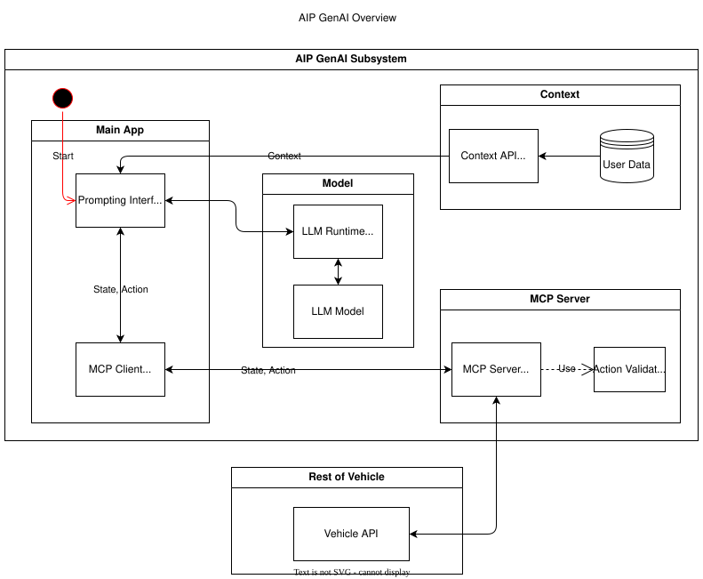

Gen AI#
Gen-AI
|
status: draft
security: NO
safety: QM
|
||||
Feature flag#
To activate this feature, use the following feature flag:
experimental_gen_ai
Abstract#
This document is an extension to the feature request AI Platform.
This feature request outlines the foundational requirements for integrating AI workloads into the S-CORE automotive platform, with a particular emphasis on enabling GenAI on Linux operating systems. Generative AI (GenAI) workloads are a core part of the platform scope on Linux, enabling on-device LLM inference for intelligent in-vehicle interactions. The document proposes extending S-CORE components (e.g., FEO, Communication, Error Handling) to support AI models natively, avoiding duplicate logic across software domains.
Motivation#
The AI Platform is needed to support the industry’s transition from traditional rule-based systems and fixed-function ECUs to software-defined and increasingly AI-defined vehicles. As automotive platforms evolve, intelligent systems must be able to process perception, planning and driver interaction using machine-learned behavior. The AI Platform enables modular, safety-aligned integration of ML and GenAI components and provides the foundation for moving from a Software-Defined Vehicle (SDV) architecture to an AI-Defined Vehicle (AIDV).
Rationale#
This approach in this Feature Request was selected to support deployment of GenAI models on the vehicle for advanced AI-defined vehicle concepts.
Specification#
This section defines the platform’s support for Generative AI (GenAI), with a focus on enabling on-device inference using small and large language models (SLM/LLMs) for interactions in the vehicle context.
In addition to standard prompt-response interaction, the scope includes support for agentic capabilities — enabling LLM-based agents that operate with situational awareness, memory, goal orientation, and structured communication with vehicle systems.
GenAI model execution should be integrated into existing S-CORE components — not implemented as a standalone subsystem. The same constraints apply as outlined in the parent feature request AI Platform.
QNX is out of scope because widely used runtimes like llama.cpp are only available on Linux. Additionally, GenAI use-cases are treated as QM, enabling the use of Linux.
Scope Overview#
The platform shall support Generative AI inference on Linux targets for non-safety-critical use cases, enabling contextual in-vehicle assistance and edge-based small and large language model (SLM/LLM) execution. The focus is on enabling model execution, streamlined integration with in-vehicle communication systems and flexible data injection via APIs.
Note: SLM/LLMs need function calling capability for the whole scope of this proposal to be accessible.
Key Goals:
Enable on-device SLM/LLM inference using runtimes such as llama.cpp
Support inference on multiple models at the same time
Define a Context API that allows the injection of relevant task context, session memory, driver preferences, and environmental factors into the LLM
Provide an MCP Server that exposes vehicle states and control interfaces to the SLM/LLM in a structured, machine-readable format, enabling real-time interaction with in-vehicle systems
The table below gives a brief overview of considered components and their respective function.
Component |
Description |
|---|---|
Runtime |
Runtime support for lightweight LLMs (e.g. llama.cpp) |
Prompting Interface |
Manages prompt templates, roles, chaining, and streaming I/O |
Context API |
Interface to manage agent memory, goals, session |
MCP Server |
Provides structured vehicle context and tools |
Action Validator |
Safety layer to validate LLM-generated actions before execution |
The figure below outlines the core data and control flow connections between components in the GenAI Subsystem.

Basic data/control flow explanation:
The Prompting Interface sends a fully constructed prompt — containing system messages, user input, and injected context — to the LLM for inference. This serves as the main entry point for user interaction and model execution.
The Prompting Interface also monitors the token stream returned by the LLM, buffering output for speech or display and detecting structured outputs such as function calls or action proposals. When an action is detected, it is passed to the Action Validator for policy enforcement.
The Prompting Interface retrieves relevant context from the Context API. This includes session memory, task goals, and personalization data that shape how prompts are built and responses are interpreted. In addition, it queries live vehicle state and resource availability via the MCP Client.
The Context API manages user preferences, goals, and session memory.
The MCP Server acts as a proxy between the GenAI subsystem and the vehicle platform. It reads sensor and state data from the Vehicle API and exposes tools (i.e., callable functions) for executing commands like HVAC control.
When the Action Validator approves a proposed action, the MCP Server sends the command to the Vehicle API for execution by the vehicle systems.
Runtime#
The platform shall support model runtimes like llama.cpp [2] for model execution. It is not a goal to provide a proprietary runtime.
Prompting Interface#
The Prompting Interface is the central orchestration layer that governs how LLMs receive inputs, structure responses, and interact with other system components. While the underlying runtime performs raw text generation one token at a time, the Prompting Interface manages everything around it — ensuring that prompts are context-aware, structured, and suitable for interactive, real-time use. Additionally, it is hosted in the same process as the MCP Client which allows it to retrieve context and tools from a domain like the vehicle.
The prompting interface includes following features:
- Prompt Templating
Supports distinct roles (system, user) and injects them as structured tokens
The roles enable a differentiation between user and non-user interactions
Ensures prompts are predictable, reusable, and structured across tasks
Encourages consistent tone and framing
- Dynamic Context Injection
Pulls real-time and personalized data from other sources (e.g., MCP server, Context API)
Injects variables such as
current_speed,destination,driver_name,external_temperatureAllows LLMs to tailor responses based on driving situation, weather, or personal preferences
- Prompt Chaining
Splits complex queries or tasks into smaller subtasks and manages their sequencing
Useful for multi-turn workflows (e.g. POI search + voice confirmation)
May involve internal reasoning steps that remain hidden from the user
- Streaming Output Decoding
Handles incremental output from the model, token by token
Enables responsive voice assistants and progressive rendering of long responses
Manages buffering, line completion, and fallback behavior (e.g. timeouts, retries)
Passes actions to MCP Client for invokation
Together, these features elevate the SLM/LLM from a raw text generator to a well-structured, interactive agent. The Prompting Interface is essential for ensuring that GenAI systems behave predictably, contextually, and safely in embedded, real-time environments.
Context API#
The Context API is a conceptual interface for managing task-level memory, dialogue state, and user preferences during LLM-based interactions. It provides structured access to:
Short-term context: Current goal, location, dialogue state
Long-term context: Driver preferences, history, personalization
This modular separation allows LLMs/agents to reason over abstract context without being tightly coupled to hardware interfaces. This modular separation allows LLMs and agents to reason over abstract context — such as goals, preferences, and session state — without direct coupling to low-level system interfaces like the file system or persistent storage.
The Context API will also allow updates to long-term user context.
Model Context Protocol (MCP) Client/Server#
MCP [2] provides structured data to the LLM in a machine-readable format. For example:
vehicle.speed: Current vehicle speednav.destination: Active navigation goalclimate.status: A/C on/off, temperature
It also maps safe commands that may be executed. For example:
{
"action": "set_temperature",
"params": { "zone": "driver", "value": 22 }
}
This ensures LLM/agent outputs can be transformed into machine-executable commands through explicit contracts.
Due to the MCP specification enforcing a 1:1 client-server connection, the MCP Client is hosted within the Main Application. This architectural choice ensures that only a single authoritative interface manages communication with the MCP Server. Consequently, the Context API does not interface with the MCP Server directly. Instead, the Prompting Interface (PI) retrieves live vehicle context data via the MCP Client, combining it with internal session and user state managed by the Context API.
Action Validator#
To ensure safety and traceability, all GenAI-generated commands should be validated by an Action Validator before being executed. This component should be designed as an abstract base class and extended for the final use case by the user.
Implementations examples include:
Rule-based filters (e.g. prohibit certain actions at high speed)
Context-aware rejection (e.g. don’t open windows in rain)
This mechanism ensures that LLMs remain advisory and non-authoritative in mixed-criticality systems. Upon approval by the Action Validator, the MCP Server executes the command of the respective MCP tool.
Advantages of using the Action Validator in the MCP Server (rather than in the Prompting Interface) include:
Action validation is close to the domain and can follow same domain specific non-functional requirements
MCP Server already has access to state data which simplifies rule checking
Easy to extend for new or existing MCP tools - only one component is affected by change
Requirements#
The related requirements can be found in Requirements.
Backwards Compatibility#
Backwards compatibility to current systems is ensured by supporting established frameworks and only providing light weight abstractions and support-components around it.
Security Impact#
The GenAI Platform introduces several new attack surfaces that require security consideration. Therefore, the overall security architecture must be revisited in detail to assess and mitigate potential risks.
The following non-complete list highlights a few security considerations per component.
- GenAI (LLM) Execution
Prompt inputs must be validated and rate-limited to protect against injection attacks or malformed sequences
The action validator must enforce whitelisting of executable commands to prevent unsafe or unintended vehicle operations
- MCP and Context APIs
All communication with the MCP Server must be authenticated and authorized
Write operations to the Context API (e.g. preference updates) must be explicitly scoped and validated
Safety Impact#
The GenAI Platform is designed to support QM use cases with a related components that do have an impact on safety. Specifically the action validator and vehicle interface must be developed according to the respective safety standards (probably ASIL-B). For example LLM-driven actions must not bypass safety monitoring or certified control paths.
An in-depth safety analysis must be conducted in the future.
License Impact#
The GenAI Platform is expected to be implemented primarily using Free and Open Source Software (FOSS), in alignment with the Eclipse Foundation’s licensing principles.
All new components developed under this feature shall be licensed under the Apache 2.0 License
Third-party runtime dependencies such as llama.cpp are also licensed under permissive FOSS licenses (MIT, Apache 2.0), making them compatible with the overall platform license
Any optional use of proprietary or closed-source AI runtimes (e.g. vendor-specific libraries) must be isolated and excluded from the FOSS-licensed deliverables
No additional licensing constraints are introduced by this feature request beyond those already adopted in S-CORE.
How to Teach This#
The following sources are recommended for onboarding:
And of course: Udemy, Youtube, Google, etc.
Rejected Ideas#
QNX was not chosen as a target platform to enable GenAI deployment due to the existing ecosystem on Linux and the targeted safety level of QM. The effort to support QNX would not stand in relation to the provided benefits.
Open Issues#
Agentic support evaluation
Decide on GenAI runtime (e.g. llama.cpp)
Select language per components (cpp vs rust), e.g. rust for MCP Server